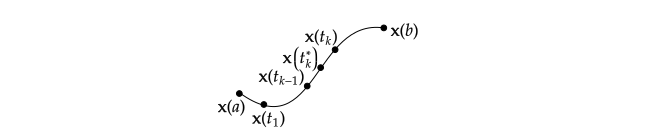

Line Integrals
Scalar and Vector Line Integrals.
Scalar Line Integrals.
To begin, we find a way to integrate a function (a scalar field) along a path. Let $\mathbf{x}:[a,b] \to \mathbf{R}^3$ be a path of class $C^1$. Let $f:X \subset \mathbf{R}^3 \to \mathbf{R}$ be a continuous function whose domain $X$ contains the image of $\mathbf{x}$ (so that the composite $f(\mathbf{x}(t))$ is defined). As has been the case with every other integral, the scalar line integral is a limit of appropriate Riemann sums.
Let
$$a = t_0 < t_1 < \ldots < t_k < \ldots < t_n = b$$
be a partition of $[a,b]$. Let $t_k^{*}$ be an arbitrary point in the $k$th subinterval $[t_{k-1},t_{k}]$ of the partition. Then, we consider the sum
$$
\sum_{k=1}^{n} f(\mathbf{x}(t_k^{*})) \Delta s_k \tag{1}
$$
where $\Delta s_k = \int_{t_{k-1}}^{t_k} ||\mathbf{x}'(t)|| dt$ is the length of the $k$th segment of $\mathbf{x}$. If we think of the image of the path $\mathbf{x}$ as representing an idealized wire in space and $f(\mathbf{x}(t_k^{*}))$ as the electrical charge density of the wire at a “test point” $\mathbf{x}(t_k^{*})$, then the product $f(\mathbf{x}(t_k^{*}))\Delta s_k$ approximates the charge contributed by the segment of the curve, and the sum in (1) approximates the total charge of the wire. To find the actual charge on the wire, it is reasonable to take a limit as the curve segments become smaller; that is:
$$
\begin{aligned}
\text{Total Charge} &= \lim_{\text{all }\Delta s_k \to 0}\sum_{k=1}^{n} f(\mathbf{x}(t_K^{*})) \Delta s_k \\
&= \lim_{\text{all }\Delta t_k \to 0}\sum_{k=1}^{n} f(\mathbf{x}(t_K^{*})) \Delta s_k \tag{2}
\end{aligned}
$$

Figure. The sum $\sum_{k=1}^{n}f(\mathbf{x}(t_k^{*}))\Delta s_k$ approximates the total charge along an idealized wire described by the path $\mathbf{x}$.
The mean value theorem for integrals tells us that there is some number $t_k^{**}$ in $[t_{k-1},t_k]$ such that:
$$\Delta s_k = \int_{t_{k-1}}^{t_k}||x'(t)|| dt = ||x'(t_k^{**})||(t_k - t_{k-1}) = ||x'(t_k^{**})||\Delta t_k$$
Since $t_k^{*}$ is an arbitrary point in $[t_{k-1},t_k]$ we may take it equal to $t_k^{**}$. Therefore, by substituting for $\Delta s_k$ in equation (2), and letting $t_k^{*} = t_k^{**}$, we have:
$$
\begin{aligned}
\text{Total Charge} &= \lim_{\text{all }\Delta t_k \to 0}\sum_{k=1}^{n} f(\mathbf{x}(t_k^{**}))||\mathbf{x}'(t_k^{**})|| \Delta t_k \\
&= \int_{a}^{b}f(\mathbf{x}(t))||\mathbf{x}'(t)||dt
\end{aligned}
$$
This last result prompts the following definition:
Definition 1. The scalar line integral of $f$ along the $C^1$ path $\mathbf{x}$ is:
$$ \int_{\mathbf{x}} f ds = \int_{a}^{b}f(\mathbf{x}(t))||\mathbf{x}'(t)||dt $$
Example 1. Let $\mathbf{x}[0,2\pi] \to \R^3$ be the helix $\mathbf{x}(t) = (\cos t, \sin t,t)$ and let $f(x,y,z) = xy + z$. We compute the line integral
$$\int_{\mathbf{x}}f ds = \int_{0}^{2\pi} f(\mathbf{x}(t)) ||\mathbf{x}'(t)|| dt $$
Solution.
First
$$\mathbf{x}'(t) = (-\sin t, \cos t, 1)$$
so that
$$||\mathbf{x}'(t)|| = \sqrt{\sin^2 t + \cos^2 t + 1} = \sqrt{2}$$
We also have:
$$f(\mathbf{x}(t)) = \sin t \cos t + t = \frac{1}{2}\sin 2t + t$$
Thus,
$$
\begin{aligned}
\int_{\mathbf{x}}f ds &= \sqrt{2}\left(\frac{1}{2}\int_{0}^{2\pi} \sin 2t dt + \int_{0}^{2\pi} t dt \right)\\
&= \sqrt{2}\left(\frac{1}{2}\left[-\frac{\cos 2t}{2}\right]_{t=0}^{t=2\pi} + \left[\frac{t^2}{2}\right]\right)\\
&= 2\sqrt{2}\pi^2
\end{aligned}
$$
Given the discussion preceding the formal definition of the line integral it is both convenient and appropriate to view the notation $\int_{\mathbf{x}}f ds$ as suggesting that the line integral represents a sum of values of $f$ along $\mathbf{x}$ times infinitesimal pieces of arclength of $\mathbf{x}$.
The definition (1) is made only for paths $\mathbf{x}$ in $\R^3$ and functions $f$ defined on domains in $\R^3$. Nonetheless, for arbitrary $n$, we may certainly use the definite integral:
$$\int_{a}^{b} f(\mathbf{x}(t)) ||\mathbf{x}'(t)||dt$$
where $\mathbf{x}$ is a $C^1$ path $\R^n$ and $f$ is an appropriate function of $n$ variables. We call this definite integral the scalar line integral as well and rely on the context to make clear the dimensionality of the situation. Also, if $\mathbf{x}$ is not of class $C^1$, but only piecewise $C^1$ (meaning that $\mathbf{x}$ can be broken into a finite number of segments that are individually of class $C^1$), then we may still define the scalar line integral $\int_{\mathbf{x}}f ds$ by breaking it up in a suitable manner. A similar technique must be used if $f(\mathbf{x}(t))$ is only piecewise continuous.